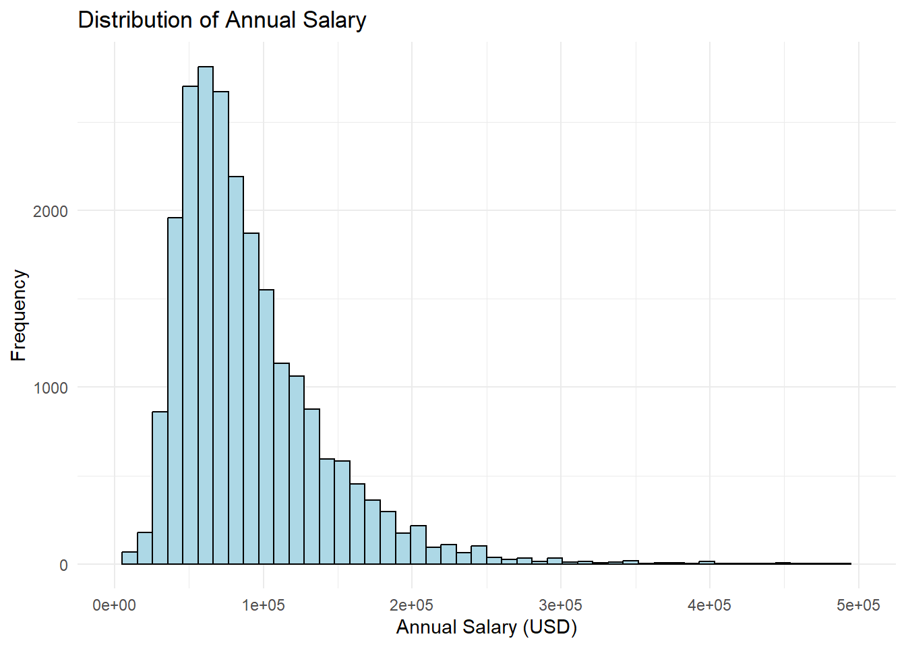
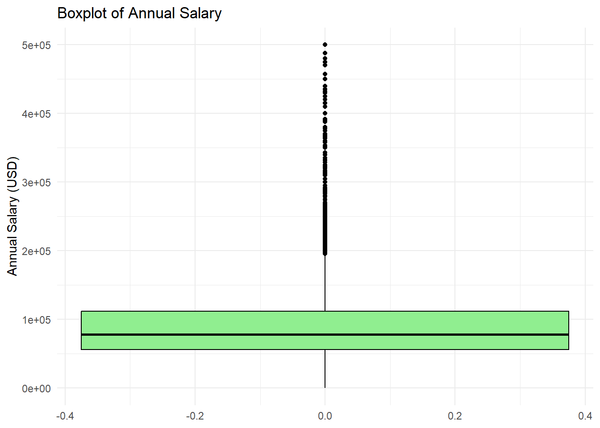
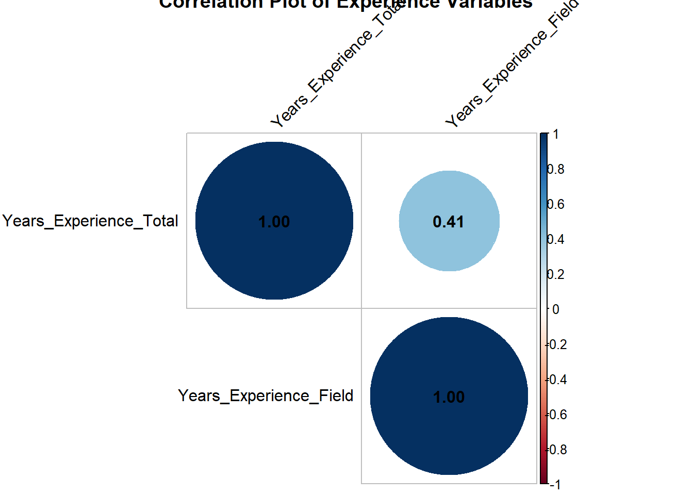

a. Import the data into a data.frame in R. Use the information in the “wine.names” file to give appropriate column names. (Note: Downloading and unzipping the file can take place outside of your submitted document, but importing the file should be in the submission.)
b. The data contains information on three different classes of wine. Check and report that the number of wines within each class is correct as reported in “wine.names”.
Show the code
# Check num of wines in each class# Should be class 1 59, class 2 71, class 3 48table(wine$Class)
1 2 3
59 71 48
c. Use the data to answer the following questions:
1. What is the correlation between alcohol content and color intensity?
The correlation is 0.5463642.
Show the code
# Corr b/w Alcohol and Color_Intensitycor(wine$Alcohol, wine$Color_Intensity)
[1] 0.5463642
2. Which class has the highest correlation? Which has the lowest?
Class 1 has the highest correlation, at approximately 0.408. Class 2 has the lowest correlation, at approximately 0.270.
Show the code
# Split the data by classclass_1 <-subset(wine, Class ==1)class_2 <-subset(wine, Class ==2)class_3 <-subset(wine, Class ==3)# Get the correlations for each classcor_class_1 <-cor(class_1$Alcohol, class_1$Color_Intensity)cor_class_2 <-cor(class_2$Alcohol, class_2$Color_Intensity)cor_class_3 <-cor(class_3$Alcohol, class_3$Color_Intensity)# Show output of all correlations for the html file, don't assign cor(class_1$Alcohol, class_1$Color_Intensity)
[1] 0.4082913
Show the code
cor(class_2$Alcohol, class_2$Color_Intensity)
[1] 0.2697891
Show the code
cor(class_3$Alcohol, class_3$Color_Intensity)
[1] 0.3503777
3. What is the alcohol content of the wine with the highest color intensity?
The alcohol content is 14.34.
Show the code
# What is the wine with the highest color intensity? Wine 159.max_color <-which.max(wine$Color_Intensity)# What is alcohol content for Wine 159?wine$Alcohol[max_color]
[1] 14.34
4. What percentage of wines had a higher content of proanthocyanins compare to ash?
Approximately 8.43% of wines had a higher content of proanthocyanins.
Show the code
# Number of wines with higher proanthocyanins is 15higher_p_count <-sum(wine$Proanthocyanins > wine$Ash)# Divide 15 by total number of wines, multiply by 100 for percentage(higher_p_count /nrow(wine)) *100
[1] 8.426966
d. Create a table identifying the average value of each variable, providing one row for the overall average, and one row per class with class averages. (This table does not need to be “fancy” but should clearly identify what each value represents.)
CHECK THAT TABLE IS NEAT ENOUGH
Show the code
# Get overall average for each column (-1 to exclude Class column)overall_averages <-colMeans(wine[, -1])# Get the averages for each classclass_1_avg <-colMeans(class_1[, -1])class_2_avg <-colMeans(class_2[, -1])class_3_avg <-colMeans(class_3[, -1])# Combine the averages into a single tableaverage_table <-rbind(Overall = overall_averages,"Class 1"= class_1_avg,"Class_2"= class_2_avg,"Class_3"= class_3_avg)print(average_table)
# Checking using tidyverse (surpress message, found on StackOverflow)suppressPackageStartupMessages(library(tidyverse))# Overall avgtidy_avg <- wine %>%summarise(across(where(is.numeric), mean))# For each classclass_averages <- wine %>%group_by(Class) %>%summarise(across(where(is.numeric), mean))
e. Carry out a series of t-tests to examine whether the level of phenols differs across the three classes. Present the R output and interpret the results.
Below I show the t-tests using the t.test function as well as the manual calculation through creating the function manual_t_test. Overall, all 3 tests show statistically significant differences in the level of phenols between each pair of classes. These results suggest that phenol levels differ substantially across different wine classes.
For the level of phenols between Class 1 and Class 2, the p-value of 1.889e-11 is extremely small, meaning there is a statistically significant difference between the phenol levels. Additionally, the confidence interval of [0.43, 0.73] does not contain 0, further confirming the statistically significant difference.
For the level of phenols between Class 1 and Class 3, the p-value of < 2.2e-16 is also extremely small, meaning there is a statistically significant difference between the phenol levels. Additionally, the confidence interval of [1.03, 1.30] does not contain 0, further confirming the statistically significant difference.
Lastly, for the level of phenols between Class 2 and Class 3, the p-value of 1.622e-10 is once again extremely small, meaning there is a statistically significant difference between the phenol levels. Additionally, the confidence interval of [0.42, 0.72] does not contain 0, further confirming the statistically significant difference.
SINCE WE DO MULTIPLE PAIRWISE T-TESTS, DO WE ALSO NEED TO DO AN F-TEST FOR THE INTERPRETATION?? MULTIPLE PAIRWISE T-TESTS WILL INCREASE RISK OF TYPE I ERROR/FALSE POSITIVES>
I also performed an F-test (ANOVA) in order to examine whether there is a statistically significant overall difference in phenol levels between the 3 classes to help control the risk of Type 1 errors due to multiple comparisons from the t-tests. The output shows a statistically significant result (p < 0.05), meaning that at least 1 of the classes has a different mean phenol level compared to the other groups and justifying the statistically significant results from the pairwise t-tests.
Show the code
# Use existing function just so we can check answer# Subset the phenol data for each classphenols_class_1 <- class_1$Total_Phenolsphenols_class_2 <- class_2$Total_Phenolsphenols_class_3 <- class_3$Total_Phenols# t-tests between each pair of classest.test(phenols_class_1, phenols_class_2)
Welch Two Sample t-test
data: phenols_class_1 and phenols_class_2
t = 7.4206, df = 119.14, p-value = 1.889e-11
alternative hypothesis: true difference in means is not equal to 0
95 percent confidence interval:
0.4261870 0.7364055
sample estimates:
mean of x mean of y
2.840169 2.258873
Show the code
t.test(phenols_class_1, phenols_class_3)
Welch Two Sample t-test
data: phenols_class_1 and phenols_class_3
t = 17.12, df = 98.356, p-value < 2.2e-16
alternative hypothesis: true difference in means is not equal to 0
95 percent confidence interval:
1.026801 1.296038
sample estimates:
mean of x mean of y
2.840169 1.678750
Show the code
t.test(phenols_class_2, phenols_class_3)
Welch Two Sample t-test
data: phenols_class_2 and phenols_class_3
t = 7.0125, df = 116.91, p-value = 1.622e-10
alternative hypothesis: true difference in means is not equal to 0
95 percent confidence interval:
0.4162855 0.7439610
sample estimates:
mean of x mean of y
2.258873 1.678750
Show the code
# F-test to see if there's a significant difference between any of the classesf_test <-aov(Total_Phenols ~factor(Class), data = wine)summary(f_test) # it's statistically significant
Df Sum Sq Mean Sq F value Pr(>F)
factor(Class) 2 35.86 17.928 93.73 <2e-16 ***
Residuals 175 33.47 0.191
---
Signif. codes: 0 '***' 0.001 '**' 0.01 '*' 0.05 '.' 0.1 ' ' 1
For minor extra credit: (You may use an existing R function to carry out the t-test, or for minor extra credit, manually write your own calculation of the t-test p-values.)
The t-statistic for an independent two-sample t-test, assuming equal variances is:
\[
t = \frac{\bar{X}_1 - \bar{X}_2}{\sqrt{\frac{s_1^2}{n_1} + \frac{s_2^2}{n_2}}}
\]
Where:
(\(\bar{X}_1\)) and (\(\bar{X}_2\)) are the sample means of classes 1 and 2.
(\(n_1\)) and (\(n_2\)) are the sample sizes of classes 1 and 2.
(\(s_1^2\)) and (\(s_2^2\)) are the sample variances of classes 1 and 2.
I use the above equation to make my function.
(Attribution of sources: I asked ChatGPT to pull the formula R used for t.test’s Welch Two Sample t-test, looked it up on Wikipedia to confirm, then used ChatGPT again to write it in LaTeX for RMarkdown. I use the equation pulled to write the function.)
roxygen to document function inputs/output! pool.
welch’s, not student’s. Can argue why student’s
Show the code
# Function to manually calculate t-test p-value between two samples# Input takes x and y, both of which are numeric vectors containing the data for the 2 groups we want to compare for the t-test#' Manual Welch Two Sample t-test#'#' This function performs a Welch Two Sample t-test manually. #' #' Used for comparing the means of two independent groups #' while accounting for unequal variances and sample sizes.#'#' @param x Numeric vector representing the first sample.#' @param y Numeric vector representing the second sample.#'#' @return List containing the t-statistic and the p-value of the test.#' @export#' @examples#' manual_t_test <-function(x, y) {# Calculate means mean_x <-mean(x, na.rm =TRUE) # check to make sure no NAs mean_y <-mean(y, na.rm =TRUE)# Calculate variances var_x <-var(x, na.rm =TRUE) var_y <-var(y, na.rm =TRUE)# Calculate sample sizes n_x <-length(x[!is.na(x)]) n_y <-length(y[!is.na(y)])# Calculate the standard error for each group se_x <- var_x / n_x se_y <- var_y / n_y# Calculate the t-statistic using the Welch formula t_stat <- (mean_x - mean_y) /sqrt(se_x + se_y)# Calculate degrees of freedom using the Welch formula df <- (se_x + se_y)^2/ ((se_x^2) / (n_x -1) + (se_y^2) / (n_y -1))# Calculate the p-value# t-stat is made negative because pt() func calculates prob of obtaining a value LESS THAN OR EQUAL TO the t-stat you give it-- ensures we look at probability on left tail of distribution# Multiply by 2 because t-test is two-tailed p_value <-2*pt(-abs(t_stat), df)# Return the t-statistic and p-valuelist(t_statistic = t_stat, p_value = p_value)}# Manually perform t-testsmanual_t_test(phenols_class_1, phenols_class_2)
a. Import the data into a data.frame in R. As with the wine data, you may download the data outside of your submission, but importation should take place inside the problem set submission.
Show the code
askmanager <-read.csv("C:/Users/tiffa/University of Michigan Dropbox/Tiffany Wu/Tiffany Wu’s files/Documents/Stats506/PS1/AskAManager.csv")
b. Clean up the variable names. Simplify them.
Show the code
# Display the original column namesprint(colnames(askmanager))
c. Restrict the data to those being paid in US dollars (USD). Show that it worked by confirming the number of observations before and after restricting the data.
Show the code
# Number of observations beforenum_obs_b4 <-nrow(askmanager)num_obs_b4
[1] 28062
Show the code
# Restrict dataus_dollars <-subset(askmanager, Currency =="USD")# Number of observations afternum_obs_after <-nrow(us_dollars)num_obs_after
[1] 23374
d. Assume no one starts working before age 18. Eliminate any rows for which their age, years of experience in their field, and years of experience total are impossible. Again, confirm the number of observations. (Hint: Making these variables factor may make your life easier.)
AFTER RESTRICTING THE DATA TO USD???
HELP
Non-factor way: - Take highest number of age MINUS lowest number for total years of experience: This has to be >= 18 - Take highest number of yrs exp in field and highest number in yrs exp field. Total has to be >= field exp.
YOU CAN BE 18-24 BUT HAVE 5-7 YRS EXP? Can have 5 or 6, but not 7. How to count this???
Factors/ orders can just do the order
Show the code
# Number of observations before (after restricting to USD)num_obs_b4 <-nrow(us_dollars)num_obs_b4
[1] 23374
Show the code
# Convert the relevant columns to factorus_dollars$Age <-as.factor(us_dollars$Age)us_dollars$Years_Experience_Total <-as.factor(us_dollars$Years_Experience_Total)us_dollars$Years_Experience_Field <-as.factor(us_dollars$Years_Experience_Field)# See all factor levelslevels(us_dollars$Age)
[1] "1 year or less" "11 - 20 years" "2 - 4 years" "21 - 30 years"
[5] "31 - 40 years" "41 years or more" "5-7 years" "8 - 10 years"
Show the code
levels(us_dollars$Years_Experience_Field)
[1] "1 year or less" "11 - 20 years" "2 - 4 years" "21 - 30 years"
[5] "31 - 40 years" "41 years or more" "5-7 years" "8 - 10 years"
Show the code
# Define the question's conditions based on the factor levelsvalid_rows <-with(us_dollars, { (Age =="18-24"& Years_Experience_Total %in%c("1 year or less", "2 - 4 years") & Years_Experience_Field %in%c("1 year or less", "2 - 4 years")) | (Age =="25-34"& Years_Experience_Total %in%c("1 year or less", "2 - 4 years", "5-7 years", "8 - 10 years") & Years_Experience_Field %in%c("1 year or less", "2 - 4 years", "5-7 years", "8 - 10 years")) | (Age =="35-44"& Years_Experience_Total %in%c("5-7 years", "8 - 10 years", "11 - 20 years") & Years_Experience_Field %in%c("5-7 years", "8 - 10 years", "11 - 20 years")) | (Age =="45-54"& Years_Experience_Total %in%c("11 - 20 years", "21 - 30 years") & Years_Experience_Field %in%c("11 - 20 years", "21 - 30 years")) | (Age =="55-64"& Years_Experience_Total %in%c("21 - 30 years", "31 - 40 years") & Years_Experience_Field %in%c("21 - 30 years", "31 - 40 years")) | (Age =="65 or over"& Years_Experience_Total %in%c("31 - 40 years", "41 years or more") & Years_Experience_Field %in%c("31 - 40 years", "41 years or more")) & (Years_Experience_Total >= Years_Experience_Field) & (Age !="under 18")})
Warning in Ops.factor(Years_Experience_Total, Years_Experience_Field): '>=' not
meaningful for factors
e. A lot of the incomes are likely false. Eliminate any rows with extremely low or extremely high salaries. I’ll leave the decision of what thresholds to use up to you; you could choose to eliminate only impossible values, or you could restrict the sample to eliminate the extreme values even if they are realistic (e.g. removing the billionaires or the folks making < $1,000 per year). You must justify your choice, along with either a cited source or an exploration the data, or some combination.Report your final sample size.
GET RID OF NAs?
Show the code
# Plot Annual Salary distributionlibrary(tidyverse)# Omit NAs-- no NAs in Annual_Salary columnus_dollars_salary <-subset(us_dollars, !is.na(Annual_Salary))# Histogramus_dollars_salary %>%ggplot(aes(x = Annual_Salary)) +geom_histogram(bins =50, fill ="lightblue", color ="black") +labs(title ="Distribution of Annual Salary",x ="Annual Salary (USD)",y ="Frequency" ) +xlim(0, 500000) +theme_minimal()
Warning: Removed 53 rows containing non-finite outside the scale range
(`stat_bin()`).
Warning: Removed 2 rows containing missing values or values outside the scale range
(`geom_bar()`).

Show the code
# Boxplot to help identify outliersus_dollars_salary %>%ggplot(aes(y = Annual_Salary)) +geom_boxplot(fill ="lightgreen", color ="black") +labs(title ="Boxplot of Annual Salary",y ="Annual Salary (USD)" ) +ylim(0, 500000) +# Adjust as needed for better visualizationtheme_minimal()
Warning: Removed 53 rows containing non-finite outside the scale range
(`stat_boxplot()`).

Show the code
# Get max and minmax(us_dollars_salary$Annual_Salary)
[1] 1.02e+08
Show the code
min(us_dollars_salary$Annual_Salary)
[1] 0
f. (Optional) If you want to see this analysis through for no credit, answer the research question of whether there is a statistical association between education and salary, controlling for years of experience.
INCLUDE YEARS_EXPERIENCE_FIELD?? Pros/cons of including or not including. Multicollinearity issue?
Do tab, see how heavy on diagonal
After controlling for years of experience, both total and specific to the field, we do not see a statistically significant association between education and salary. Of course, we are not including all possible confounding factors into our regression model, so we’re not super confident about this conclusion.
Show the code
# First do correlation to see if we should include Years_Experience_Field AND Years_Experience_Totallibrary(corrplot)
corrplot 0.94 loaded
Show the code
# Create a factor df us_dollars_factor <- us_dollars_salary# Convert factors to numeric valuesus_dollars_factor$Years_Experience_Total <-as.numeric((us_dollars_factor$Years_Experience_Total))us_dollars_factor$Years_Experience_Field <-as.numeric((us_dollars_factor$Years_Experience_Field))# Make correlation matrixcor_matrix <-cor(us_dollars_factor[, c("Years_Experience_Total", "Years_Experience_Field")], use ="complete.obs")# Create the correlation plotcorrplot(cor_matrix, method ="circle", type ="upper", tl.col ="black", tl.srt =45,title ="Correlation Plot of Experience Variables", addCoef.col ="black")

Show the code
# There's only a 0.41 correlation if we use the numeric version of the factor-- it's not that high, so justifies including both in the regression model
Show the code
library(lmtest)
Loading required package: zoo
Attaching package: 'zoo'
The following objects are masked from 'package:base':
as.Date, as.Date.numeric
Show the code
# Fit regressionsalary_model <-lm(Annual_Salary ~ Education_Level + Years_Experience_Total + Years_Experience_Field,data = us_dollars_salary)# Display the summary of the modelsummary_lm <-summary(salary_model)print(summary_lm)
Call:
lm(formula = Annual_Salary ~ Education_Level + Years_Experience_Total +
Years_Experience_Field, data = us_dollars_salary)
Residuals:
Min 1Q Median 3Q Max
-244787 -37125 -10205 20704 101735840
Coefficients:
Estimate Std. Error t value
(Intercept) 91805.5 62999.0 1.457
Education_LevelCollege degree -24820.2 54532.0 -0.455
Education_LevelHigh School -29342.6 63578.6 -0.462
Education_LevelMaster's degree -21499.0 54725.1 -0.393
Education_LevelPhD -682.5 57750.1 -0.012
Education_LevelProfessional degree (MD, JD, etc.) 37676.5 57725.7 0.653
Education_LevelSome college 20601.2 56731.9 0.363
Years_Experience_Total11 - 20 years 127401.3 41443.2 3.074
Years_Experience_Total2 - 4 years 96307.8 41035.3 2.347
Years_Experience_Total21 - 30 years 117608.6 43779.4 2.686
Years_Experience_Total31 - 40 years 118908.6 52033.5 2.285
Years_Experience_Total41 years or more 209001.4 83711.0 2.497
Years_Experience_Total5-7 years 120496.2 41267.9 2.920
Years_Experience_Total8 - 10 years 151753.5 41565.7 3.651
Years_Experience_Field11 - 20 years -94182.1 27604.5 -3.412
Years_Experience_Field2 - 4 years -116402.4 25216.1 -4.616
Years_Experience_Field21 - 30 years -71791.0 33959.6 -2.114
Years_Experience_Field31 - 40 years -94676.5 53354.3 -1.774
Years_Experience_Field41 years or more -163632.9 130836.2 -1.251
Years_Experience_Field5-7 years -119724.4 26209.7 -4.568
Years_Experience_Field8 - 10 years -115924.7 27320.9 -4.243
Pr(>|t|)
(Intercept) 0.145059
Education_LevelCollege degree 0.649007
Education_LevelHigh School 0.644432
Education_LevelMaster's degree 0.694430
Education_LevelPhD 0.990571
Education_LevelProfessional degree (MD, JD, etc.) 0.513968
Education_LevelSome college 0.716510
Years_Experience_Total11 - 20 years 0.002114 **
Years_Experience_Total2 - 4 years 0.018936 *
Years_Experience_Total21 - 30 years 0.007228 **
Years_Experience_Total31 - 40 years 0.022308 *
Years_Experience_Total41 years or more 0.012542 *
Years_Experience_Total5-7 years 0.003505 **
Years_Experience_Total8 - 10 years 0.000262 ***
Years_Experience_Field11 - 20 years 0.000646 ***
Years_Experience_Field2 - 4 years 3.93e-06 ***
Years_Experience_Field21 - 30 years 0.034525 *
Years_Experience_Field31 - 40 years 0.075996 .
Years_Experience_Field41 years or more 0.211068
Years_Experience_Field5-7 years 4.95e-06 ***
Years_Experience_Field8 - 10 years 2.21e-05 ***
---
Signif. codes: 0 '***' 0.001 '**' 0.01 '*' 0.05 '.' 0.1 ' ' 1
Residual standard error: 674100 on 23353 degrees of freedom
Multiple R-squared: 0.002344, Adjusted R-squared: 0.00149
F-statistic: 2.744 on 20 and 23353 DF, p-value: 4.344e-05
Problem 3 - Palindromic Numbers
a. Write function isPalindromic that checks if a given positive integer is a palindrome. Be sure to provide a reasonable error on an invalid input. Be sure to document your function (see instructions above).
Input: A positive integer
Output: A list with two elements:
isPalindromic: A logical value indicating if the input is palindromic.
reversed: The input with its digits reversed.
Show the code
#' Check if number is palindromic#'#' This function checks if a given positive integer is a palindromic number and returns#' both a logical value if input is palindromic and the reversed version of the input.#'#' @param number A positive integer.#'#' @return A list with two elements: #' - `isPalindromic`: A logical value indicating if the input is palindromic.#' - `reversed`: The input with its digits reversed.#' #' @examples#' isPalindromic(728827)#' isPalindromic(39951)#' #' @export#' isPalindromic <-function(number) {# Check if input is numeric firstif (!is.numeric(number)) {# If given a string, try to be nice and convert for userwarning("number must be numeric, attempting to convert") number <-as.numeric(number) if(!is.numeric(number)){ # Check againstop("number must be numeric or convertible") } }# Check if number is positiveif(number <=0){stop("number must be positive") }# Check if number is an integer (no decimals)if(number !=as.integer(number)){stop("number must be an integer") }# If it passes all those checks we can move on # Convert the number to a string, reverse it, and convert back to number num_str <-as.character(number)# Reversing code from ChatGPT, asked how to use paste to reverse a string reversed_str <-paste0(rev(strsplit(num_str, NULL)[[1]]), collapse ="") reversed_num <-as.numeric(reversed_str)# Check if the number is palindromic is_palindrome <- (number == reversed_num)# Return resultsreturn(list(isPalindromic = is_palindrome, reversed = reversed_num))}# Trying function outisPalindromic(728827)
$isPalindromic
[1] TRUE
$reversed
[1] 728827
Show the code
isPalindromic(39951)
$isPalindromic
[1] FALSE
$reversed
[1] 15993
b. Create a function nextPalindrome that finds the next palindromic number strictly greater than the input. Be sure to provide a reasonable error on an invalid input.
Input: A positive integer
Output: A vector of length 1 with the next palindromic number greater than the input
Show the code
#' Find the next palindromic number#'#' This function finds the next palindromic number that is strictly greater#' than the provided positive integer input.#'#' @param number A positive integer.#'#' @return A numeric value of the next palindromic number greater than the input.#' #' @examples#' nextPalindrome(7152)#' nextPalindrome(765431537)#' #' @export#' nextPalindrome <-function(number) {# Check if input is numeric firstif (!is.numeric(number)) {# If given a string, try to be nice and convert for userwarning("number must be numeric, attempting to convert") number <-as.numeric(number) if(!is.numeric(number)){ # Check againstop("number must be numeric or convertible") } }# Check if number is positiveif(number <=0){stop("number must be positive") }# Check if number is an integer (no decimals)if(number !=as.integer(number)){stop("number must be an integer") }# Start searching from the next number candidate <- number +1# Function from first question to check if a number is palindromic# Write again inside this so we don't have depend on running part a to do this function is_palindrome <-function(num) { num_str <-as.character(num) reversed_str <-paste0(rev(strsplit(num_str, NULL)[[1]]), collapse ="")return(num_str == reversed_str) }# Loop until a palindromic number is foundwhile (TRUE) {# Check if the candidate is palindromicif (is_palindrome(candidate)) {return(candidate) }# Increment the candidate to check the next number candidate <- candidate +1 }}# Testing functionnextPalindrome(7152) # 7227
[1] 7227
Show the code
nextPalindrome(765431537) # 765434567
[1] 765434567
c. Use these functions to find the next palindrome for each of the following: